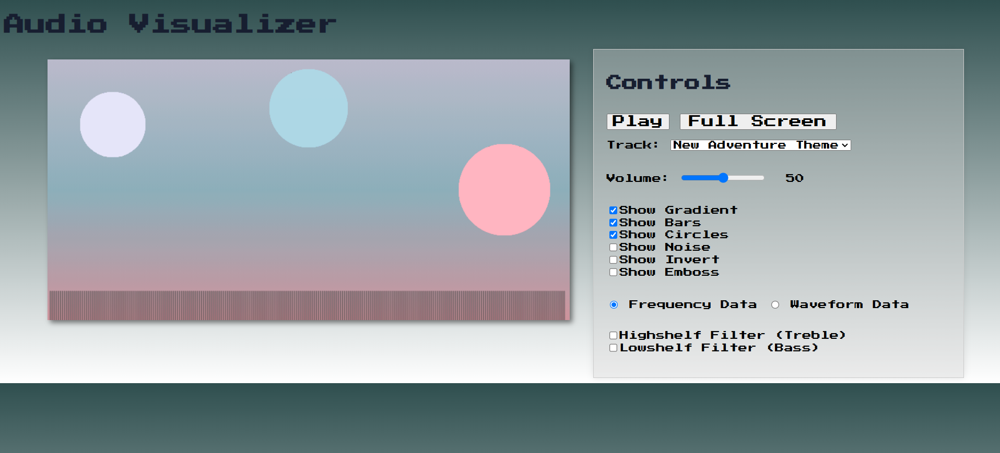
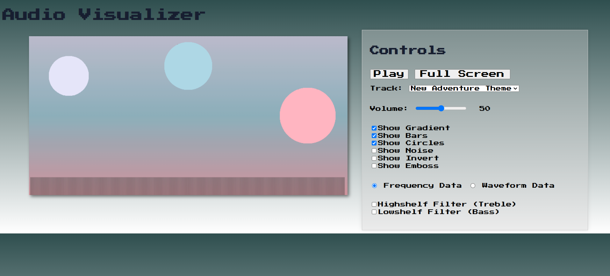

Audio Visualizer
Audio Visualizer is a web app that displays captivating audio visuals for set of classic tracks. Users can modify how the audio sounds and is visualized by using the controls.
Audio Visualizer is a web app that displays captivating audio visuals for set of classic tracks. Users can modify how the audio sounds and is visualized by using the controls.
